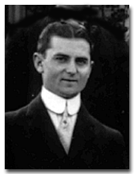
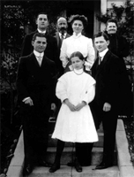
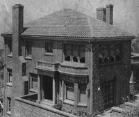

|
 |
|
Emil Ernest Gloorh | |
|
Emil Ernest Gloor was born in Bern, Switzerland. He is the son of Emil and Lisette Sahli of Switzerland. They had five children. Click here to see Wikipedia media files for Emil Ernest Gloor. |
|
| Important Facts | |
| January 29, 1884 | Born in Bern, Switzerland. He is the son of Emil and Lisette Sahli of Switzerland. | |
| At first he wanted to find diamonds in South Africa. His mother would not let him go, but said he could go to England. He went to England at age 14. | ||
| 1898 | He lost money gambling on horse racing so he saved enough money to come to America. He got a job as an elevator boy. When did he come: He came to New York City in 1898. How did he come: He came by boat from England to New York City. | |
| He met a man named Mr. White on the boat and they became friends. Later, when Mr. Gloor traveled from New York to San Francisco, he meet Mr. White again who was a brick layer foreman. |  Gloor Family | |
| Mr. Gloor and Mr. White started the White & Gloor brick & masonry contracting business. They helped build the following buildings: San Francisco Furniture Exchange, Heinz's Plant in Tracy '46, the accounting building in Martinez, the Library at the University or Oregon, the stone work for the pool at the Hearst Castle, and the tile work on the Toll Plaza for the Bay Bridge. | ||
| April 20, 1910 | Emil Gloor (54), Lisette (53), Emil E. (26 superintendent), Wirner (24 cook), Ernest (22 waiter), Margarate (13) listed as living on Henry Street in Berkeley, California. Oakland, Township, Alameda, CA. Source: 1910 US Census Series: T624, Roll: 72, Part: 2, Page: 43A. | |
| 1917 | Emil Ernest Gloor (32) is listed in the WW I Draft Registration Cards as living in Berkeley working as a contractor for the White and Gloor company. Source: World War I Draft Registration Cards, 1917-1918, Alameda County, California; Roll: 1530663; Draft Board: 2. | |
| January 6, 1920 | Emil Gloor (62 watchmaker for Jewelry store), Lisette (62), Emil Gloor Jr. (36 Contractor for Masonry Co.), Margarate (22 clerk for railroad) listed as living Berkeley, Alameda, California. Source: 1920 US Census. Roll: T625_93, Page: 6B, ED: 194, Image: 420. | |
| November 1, 1924 | Emil married Louise Dorothea Stein at the Lutheran Church in Berkeley, California. The bride wore a dress of white brocade chiffon and carried a bouquet of lilies. The bridesmaids were Miss Martha Stein, sister of the bride, Miss Margaret Gloor, sister of the bridegroom, Eddy Jane Ressman. Following the ceremony, a reception and dinner were given to ninety guests in the Hotel Claremont ballroom. Music and dancing followed the banquet. Source: San Francisco Chronicle, Sunday, November 9, 1924. | |
| 1925 | Built a new house at 80 Oak Ridge Road, Berkeley, California. Herb lived in this house until he was married in 1959. |  80 Oak Ridge Road |
| October 8, 1925 | Nancy Louise Gloor was born in Berkeley, California. | |
| November 6, 1928 | Herbert Emil Gloor was born in Berkeley, California. | |
| 1930 | US Federal Census lists Emil E. Gloor (46), Louise S. (31), Nancy L. (4), and Emil H. (1), living in Berkeley, Alameda, California. Source: Roll: 110; Page: 10B; Enumeration District: 282; Image: 869.0. | |
| 1940 | Emil Glorr was listed in the 1940 US Census as age 56 along his wife Louise (39), Nancy (14) and Herbert (11) living on Oak Ridge Road, Berkeley, California. Source: Ancestry.com. 1940 United States Federal Census. Provo, UT, USA. | |
| Sept. 29, 1946 | Emil Gloor Died in Berkeley, California. Source: California Death Index, 1940-1997. |

Last update: August 11, 2026